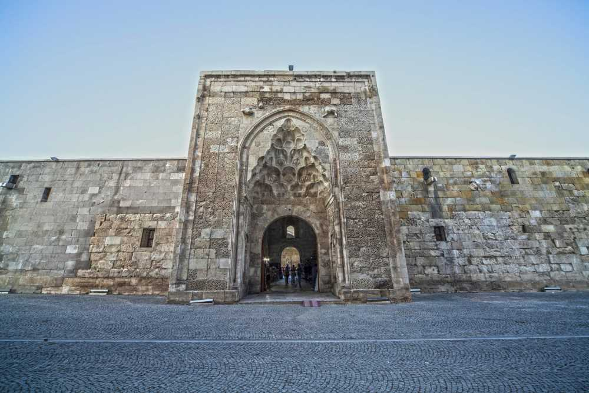
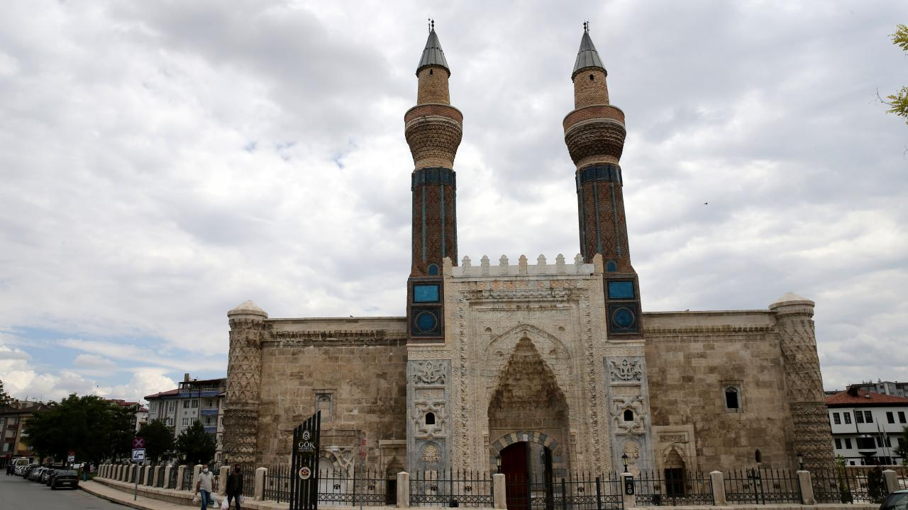
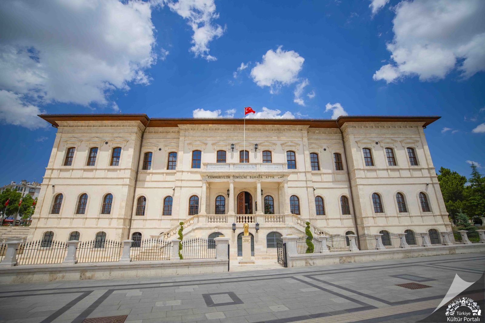

Gökpınar Gölü tabii güzelliği bakımından Gürün’ün olduğu kadar ülkemizin de nadide yerlerinden biridir. İlçe merkezine 10 kilometre uzaklıktadır. Suyu tatlı, berrak ve temizdir. Öyle ki bazı kısımların derinliği 17-20 metreyi bulduğu halde içine atılan küçük bir cismin tabana kadar çöküşü ve tabandaki duruşu, net olarak izlenebilmektedir. Gölün diğer bir özelliği, güneşin açısına göre ton değiştirmesidir. Gölün rengi mavi-gök renginden olduğu için bu ad verilmiştir. Yaslandığı kayaların dibinden ve yer yer tabandan kaynayan göl, iki parçadan oluşmaktadır. Küçük Göl adı verilen gölden çıkan suda alabalık üretimi yapılmaktadır. Büyük Göl ise turistik amaçlarla ziyaret edilen bir konumdadır.
Sivas Lisesi, Türkiye'de cumhuriyeti tarihinde de önemli bir yere sahiptir. 4 Eylül 1919'da Türkiye Cumhuriyeti'nin kuruluş kararlarının alındığı Sivas Kongresi'ne ev sahipliği yapmıştır. [2] Mustafa Kemal Atatürk ve Heyet-i Temsiliye'nin bir süre karargâh olarak kullandıkları ve o tarihlerde Sultani (lise) olan bina; Sivas Kongresi'nin 4-12 Eylül tarihleri arasında burada toplanması ile tarihsel bir kimlik kazanmıştır.[3] Kongre zamanında on iki sınıflı olan okul, Türkiye'de cumhuriyetin ilanı ile birlikte sultânîlere "lise" adı verilmesi kararı üzerine 1924 yılından itibaren; önce Sivas İdadisi sonra Sivas Mekteb-i Sultânîsi, Atatürk’ün direktifi üzerine de Sivas Lisesi adını almıştır. [1] Binanın temeli, Eski Sivas Valisi Giritli Sırrı Paşa tarafından atılmış, ancak valinin tayini çıkması üzerine yapımına bir süre ara verilmiş, daha sonra Vali Mehmet Memduh Bey temelin yerini değiştirerek inşaatı yeniden başlatmıştır. [4] Mehmed Memduh Bey, okulun yapılmasına büyük bir çaba harcamış bu nedenle okulun yapımı, artırma ve eksiltme çalışması bir müteahhitte verilmiştir. Bu konuda komisyon kurulmuş ve bu komisyonun başkanlığına Ahmed Cemal Bey getirilmiştir. Cumhuriyet'in ilanından sonra yeniden ele alınan eğitim öğretim politikasının bir gerçeği olarak Sivas Lisesi, Anadolu liseleri içerisinde "sembol mektep" kimliğine kavuşturulmuştur[5] Sivas Kongresi’nin temsil heyetinin seçilip Ankara’ya gitmesinden sonra açılan astsubay okulu kısa bir süre burada hizmet verdikten sonra Tokat’a taşınınca bina yeniden lise olarak hizmet vermeye başlamıştır. Kongre sırasında okulun on iki sınıfından yedisi Paşabostan Mahallesi'nde Burhaneddin Efendi’nin konağına, kalan beşi ise Taşlı Sokak'ta Abidin Bey’in konağının karşısındaki eve taşınmıştır.